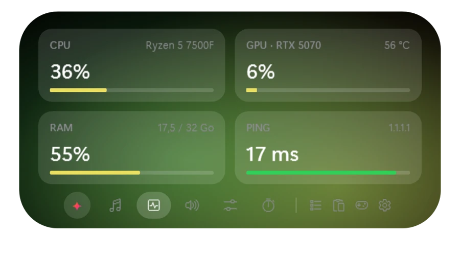
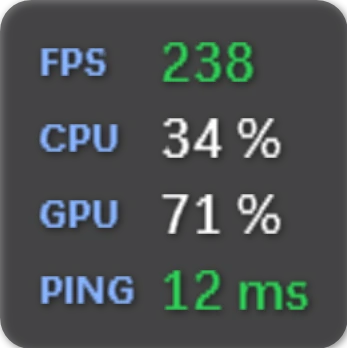

Essai gratuit de 3 jours
Dynamic Island.
Enfin sur PC.
Musique, stats, captures, replay, assistant IA. Tout vit dans une île qui s'ouvre quand tu en as besoin et disparaît quand tu joues.
Une île qui s'adapte à ce que tu fais. Elle écoute ta musique, surveille ton PC, capture ton écran et se range d'elle-même. Rien à configurer, tout se règle d'un geste.
Tout ce qu'il te faut.
Au même endroit.
Des fonctions pensées pour être belles, rapides et discrètes.
Aperçu en direct
Les stats de ton PC, d'un coup d'œil.
Processeur, mémoire, réseau. L'île se déploie et se range sans jamais gêner.

Notifications
Rien ne t'échappe.
Messages et alertes apparaissent dans l'île, avec un ressort fluide.

Jeux
Overlay et réticule.
Un affichage léger par-dessus tes jeux, sans rien injecter.

Des réglages
clairs comme du cristal.
Thème, couleurs, animations : tout se règle en quelques clics.
Apparence
À ton image.
Choisis la teinte, la vitesse et la forme de l'île.

Réticule
Visée parfaite.
Croix, cercle, T : place-le exactement où tu veux.

Sessions
Ta semaine en un coup d'œil.
Suis ton temps de jeu et tes habitudes, sans rien envoyer en ligne.

Choisis ta formule.
Essaie gratuitement, puis garde-la pour toujours. Pas d'abonnement.
Config minimum
Questions.
L'essai gratuit peut-il être refait ?
Non. L'essai dure 3 jours et n'est accordé qu'une fois par PC : réinstaller l'appli, changer de navigateur ou de connexion ne donne pas un nouvel essai. Il est lié à des identifiants anonymes du PC, détaillés dans la politique de confidentialité.
Comment obtenir une licence ?
Après l'essai, Dynamic Island demande une clé de licence personnelle. Pour en obtenir une, contacte l'auteur via sa page GitHub.
Les nouvelles fonctions sont-elles actives dès l'installation ?
Non. Elles sont désactivées par défaut : tu actives celles que tu veux dans les Réglages (Outils, Jeux, Capture d'écran, Apparence). Le mode streamer et les profils s'ouvrent par un clic droit sur l'île, « Confidentialité & profils ».
L'envoi vers le téléphone est-il sûr ?
L'île ouvre un petit serveur temporaire, uniquement sur ton réseau local, protégé par un code aléatoire et fermé tout seul au bout de quelques minutes. Il n'est jamais accessible depuis Internet. Au premier envoi, Windows peut demander d'autoriser l'appli sur le réseau privé : clique sur « Autoriser », sinon le téléphone ne pourra pas se connecter.
Que détecte le mode streamer ?
OBS, Streamlabs et XSplit de façon fiable. Les partages d'écran Zoom, Teams et Discord sont détectés de façon approximative : tu peux toujours forcer le masquage avec Ctrl + Maj + P.
Sur quels Windows ça marche ?
Windows 10 (version 2004 ou plus récente) et Windows 11. L'installateur ajoute .NET 8 tout seul si ton PC ne l'a pas.
C'est sans danger avec les jeux et les anti-triche ?
L'overlay et le réticule sont de simples fenêtres posées par-dessus l'écran. Rien n'est injecté dans les jeux, comme la Xbox Game Bar.
Que fait l'appli de mes données ?
L'essentiel reste sur ton PC. Ce qui peut en sortir (licence, mises à jour, paroles, assistant IA…) est détaillé dans la politique de confidentialité. Aucune publicité, aucun outil d'analyse.
Mes réglages survivent-ils aux mises à jour ?
Oui. Ils sont gardés dans ton dossier utilisateur, avec une copie de sécurité à chaque nouvelle version.
Comment la désinstaller ?
Paramètres Windows → Applications → Dynamic Island → Désinstaller. Tes réglages restent dans %AppData%\DynamicIsland tant que tu ne supprimes pas ce dossier.